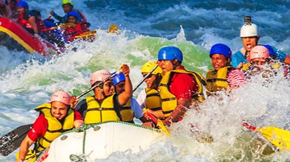

Whitewater rafting is a type of recreation that involves navigating a non-motorized watercraft down free flowing rivers. A rafting company organizes trips, provides the watercraft, life jackets, etc., and typically offers experienced guides to take passengers down a river. The business intent is to provide a thrilling and safe experience to individuals and groups for a fee.